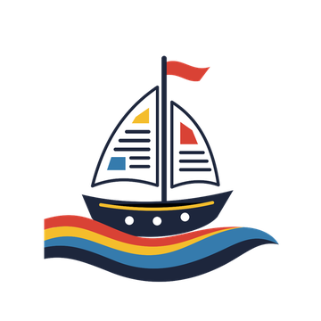
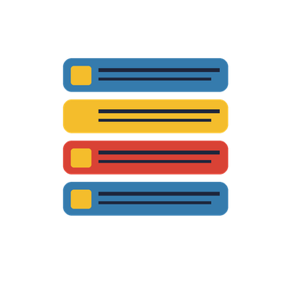
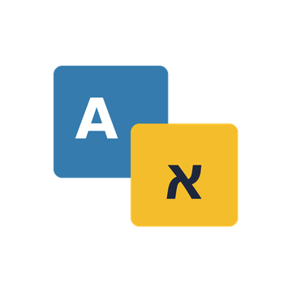
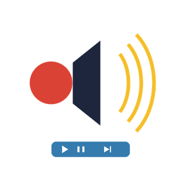

Pirate RSS
קוראים את האינטרנט בלי שהאינטרנט יקרא אתכם 🏴☠️
Read the web without the web reading you.
חדשות, בלוגים ופודקאסטים ממקורות שבחרתם, בלי אלגוריתם שמחליט בשבילכם ובלי להיות הסחורה. ארגזי האוצר שלכם, הכללים שלכם. 😜
Your sources, your rules, no algorithm in the captain's chair.
הקישור חסר כתובת. / The link has no address.

הפיד שלכם
כל הכתבות מהמקורות שבחרתם מסודרות יחד לקריאה נוחה
Your feed
All articles from the sources you chose, lined up together for easy reading
מגלים מקורות חדשים
מחפשים אתרים ונושאים שמעניינים אתכם ומוסיפים אותם לפיד
Discover new sources
Search for sites and topics you care about and add them to your feed
אותו סיפור מכמה מקורות
סריקה חכמה לבחירתכם מקבצת כתבות דומות פותחים את הערימה ובוחרים מה לקרוא
The same story from several sources
An optional smart scan groups similar articles Open the stack and pick what to read

קוראים בשפה שלכם
מתרגמים כתבה לשפת האפליקציה ובוחרים איך לבצע את התרגום
Read in your language
Translate an article into the app language and choose how the translation is done

מקשיבים וממשיכים
הקראת כתבות עם מעבר אוטומטי לבאה אפשר לשלוט בניגון גם מהתראת ההשמעה
Listen and keep going
Read articles aloud and move to the next one automatically You can control playback from the playback notification
מתחברים לגיבוי
מחברים חשבון לגיבוי בענן של ההגדרות והכתבות ששמרתם
Back up with an account
Connect an account to back up your settings and the articles you saved to the cloud
הפיד גם במסך הבית
ווידג׳טים לכותרות מכל המקורות או למקור אחד שבחרתם
The feed on your home screen
Widgets with headlines from all sources or from one source you pick